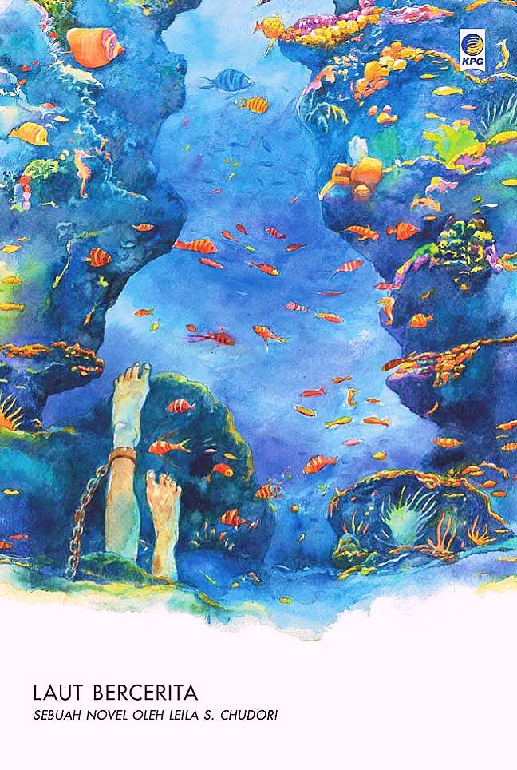
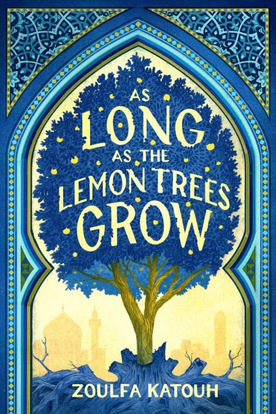

Teman Baca Kamu < 3
Buat Hari Mu Lebih Baik Dengan Membaca
Welcome to our library, where every book tells a story and every page sparks joy.

Welcome to our library, where every book tells a story and every page sparks joy.
Di antara huruf dan makna, kami menghadirkan ruang bagi buku untuk hidup dan berbicara. Setiap karya adalah jendela menuju dunia yang lebih luas—menghidupkan imajinasi, memperkaya pengetahuan, dan menyentuh rasa.

Atomic Habits adalah buku yang membahas tentang bagaimana kebiasaan kecil dapat membawa perubahan besar dalam hidup kita. Buku ini ditulis oleh James Clear dan memberikan panduan praktis untuk membangun kebiasaan positif dan menghilangkan kebiasaan buruk.

Novel "Sisi Tergelap Surga" karya Brian Khrisna berkisah tentang realitas keras kehidupan masyarakat kelas bawah di Jakarta, yang sering dianggap sebagai "surga" harapan. Buku ini menarasikan perjuangan karakter yang bertahan hidup di tengah kemiskinan kota.

"Laut Bercerita" adalah novel karya Leila S. Chudori (2017) yang mengangkat kisah kelam penculikan dan penghilangan paksa aktivis mahasiswa pada masa Orde Baru tahun 1997-1998. Menarasikan perjuangan dan pengkhianatan melalui tokoh Biru Laut.

"As Long As The Lemon Trees Grow" karya Zoulfa Katouh adalah novel fiksi remaja romantis yang berlatar belakang revolusi Suriah. Ceritanya berfokus pada perjuangan, trauma, dan harapan yang mengikuti kisah Salama.

The Illusion of Choice adalah konsep psikologis di mana individu merasa memiliki kebebasan penuh untuk memilih, padahal opsi-opsi tersebut sebenarnya telah diatur atau dibatasi oleh pihak lain yang menciptakan ilusi kontrol.

The Psychology of Money adalah buku yang menggali lebih dalam tentang bagaimana psikologi memengaruhi keputusan finansial kita. Buku ini ditulis oleh Morgan Housel dan memberikan wawasan tentang hubungan emosi dan keuangan.